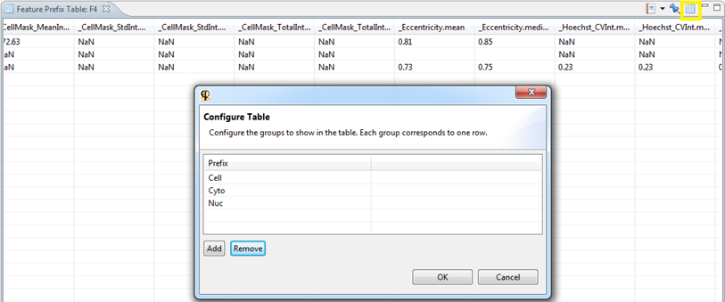
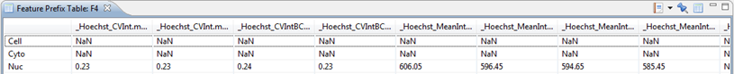

The Feature Prefix Table allows you to group features based on their prefix. This allows you to create a more organized view of certain features.
For example, suppose you have three feature groups, containing the same measurements (mean intensity, total intensity, etc) for different cell locations (nucleus, cytoplasm and total cell). You can use a Feature Prefix Table to list these measurements, one row per cell location, one column per measurement.
To add a new Feature Group, click the Manage Feature Groups icon in the top-right corner of the view

After adding the 3 new Feature Groups, you will see a combined table based on the prefix Cell, Cyto and Nuc.
